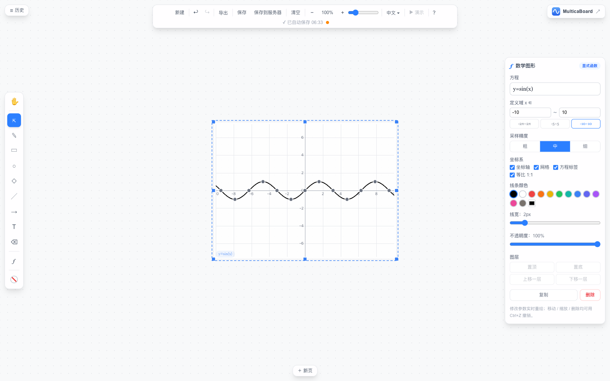

关于我们 · About
关于 MulticaBoard
MulticaBoard 是一个面向课堂教学的在线白板：具备常规白板的全部能力，并让数学方程式直接变成可编辑的矢量图形。我们的使命是——让数学可视化进入每一间教室。
为什么做这块白板
数学课上有一幕反复出现：老师想讲 y = sin(x) 的图像变换，却在黑板前徒手画波浪线——画不准，擦掉重画又耽误讲课。市面上的白板工具很多，画笔、形状、便签样样齐全，却没有一块为数学课堂做过什么。我们决定补上这一块：写下方程式，图形随之成形。
我们的做法
- 方程出图是核心差异：输入 y = sin(x)、y = x² − 2x − 3 或圆的方程 (x−1)²+(y−2)²=9，即得到一个自带坐标系的矢量图形——和普通白板元素一样可选中、移动、缩放，还可调整定义域、颜色与线宽；覆盖一次/多项式/三角/幂/根/反比例/指数/对数/绝对值/圆/椭圆等常见方程族，内置 13 个即用模板。
- 白板能力一样不少：画笔、形状、文本、撤销重做、自动保存、导出 PNG/JPG/SVG；浏览器打开即用，无需安装、免费上手。
- 实现可查：渲染基于 Canvas 2D 自研，不依赖第三方绘图库；源代码在 GitHub 公开，欢迎审阅。

我们是如何走到这里的
- 项目启动，交付第一版白板：画笔、形状、文本、撤销重做、导出。
- 方程出图（MathPlot）技术方案定稿并投入开发，官网落地页上线。
- 启用自有域名 multicaboard.com，白板开放使用：board.multicaboard.com。
联系我们
合作洽谈、功能建议或问题反馈，欢迎前往联系我们页面，我们通常在 1-3 个工作日内回复。